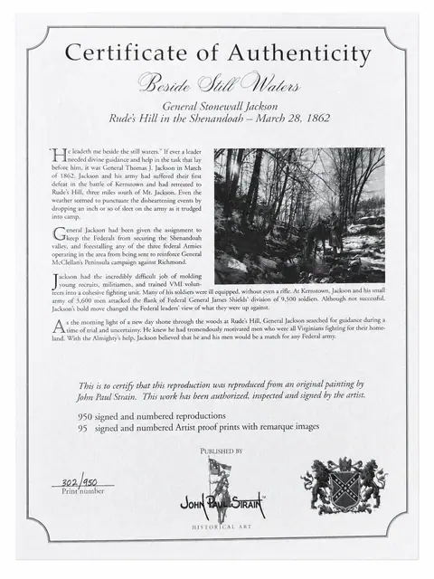
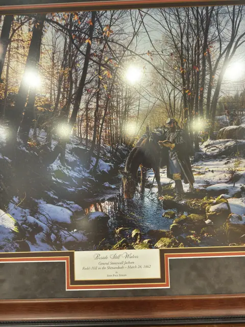

Paintings & Prints
Framed Winter Woodland Stream Print with Certificate of Authenticity
Price Upon Request



About the Item
Winter landscape with a stream running through bare woodland. Titled plaque on the mat. Accompanied by a certificate of authenticity, photographed with the lot. Framed in dark wood under glass.
Details
- Dimensions:
- Height: 29.75 in (75.56 cm)
Width: 35.0 in (88.9 cm)
outside of frame - Condition:
- Offered in the condition shown in the photographs.
- Reference Number:
- VO-07
- Documentation:
- Certificate of Authenticity